Kapitel 01
Ihre digitale Tagungsmappe zum 4. Deutsch-Tschechischen Regionalforum.Vaše digitální konferenční složka ke 4. česko-německému regionálnímu fóru.
Willkommen lesenČíst uvítáníKapitel 01
Willkommen zum 4. Deutsch-Tschechischen Regionalforum. Vom 3. bis 4. November 2026 kommen in Dresden rund 200 Akteurinnen und Akteure aus Verwaltung, Zivilgesellschaft, Wirtschaft und Wissenschaft beider Länder zusammen.Vítejte na 4. česko-německém regionálním fóru. Od 3. do 4. listopadu 2026 se v Drážďanech sejde přibližně 200 aktérů ze správy, občanské společnosti, hospodářství a vědy obou zemí.
Zwei Tage — Bestandsaufnahme und Perspektive —, um Netzwerke zu stärken, Herausforderungen zu benennen und gemeinsam Handlungsansätze für den Grenzraum zu erarbeiten. Diese Mappe begleitet Sie durch Programm, Fachforen und Vor-Ort-Infos.Dva dny — analýza stavu a perspektiva —, abychom posílili sítě, pojmenovali výzvy a společně vypracovali kroky pro příhraniční region. Tato složka vás provede programem, odbornými fóry a informacemi na místě.
Wir freuen uns auf den Dialog mit Ihnen.Těšíme se na dialog s vámi.
TerminTermín
3.–4. Nov 2026
OrtMísto
Hilton Dresden
SprachenJazyky
DE·CZ gedolmetschttlumočeno DE·CZ
TeilnehmendeÚčastníci
ca. 200
Kapitel 02
3.–4. November 2026 · Hilton Hotel Dresden
Stand: 6. Oktober 2026 — Änderungen vorbehalten.Stav k 6. říjnu 2026 — změny vyhrazeny.
Ankunft · Anmeldung · ImbissPříchod · registrace · občerstvení
Road Show
Begrüßung & EröffnungPřivítání a zahájení
Videobotschaft StM Gunther Krichbaum (Auswärtiges Amt)Videoposelství státního ministra Gunthera Krichbauma (Spolkové ministerstvo zahraničí)
Jiří Brodský, 1. Stellv. Außenminister CZE · VideobotschaftJiří Brodský, 1. náměstek ministra zahraničních věcí ČR · videoposelství
Gregor Schaaf-Schuchardt (Stiftung IBZ St. Marienthal)Gregor Schaaf-Schuchardt (Nadace IBZ St. Marienthal)
Bürgermeisterin Annekatrin Klepsch (Stadt Dresden)Starostka Annekatrin Klepsch (město Drážďany)
ModerationModerace: Hana Scharffová
Einführung in das ProgrammÚvod do programu
Hana Scharffová — Hauptmoderationhlavní moderace
Keynote AGEG
Martín Guillermo-Ramírez (AEBR)
„Grenzüberschreitende Zusammenarbeit aus Sicht der AGEG/AEBR: Erfolgsbeispiele, Hindernisse und Lösungen – BRIDGEforEU“„Přeshraniční spolupráce z pohledu AGEG/AEBR: příklady úspěchu, překážky a řešení – BRIDGEforEU“
MFR und Finanzierung grenzüberschreitender KooperationenVFR a financování přeshraniční spolupráce
Martín Guillermo-Ramírez (AEBR)
Simona Pohlová (DG Regio)
Martin Buršík (Regionalministerium CZEMMR ČR)
Tomáš Jelínek (DTZF)
Morris Reinmüller (Auswärtiges AmtSpolkové ministerstvo zahraničí)
ModerationModerace: Filip Nerad
Keynote der Stellvertretenden Ministerin des CZE RegionalministeriumsKeynote náměstkyně člena vlády pro místní rozvoj
JUDr. Olga Nebeská, Ph.D. (Ministerium für Regionalentwicklung CZEMinisterstvo pro místní rozvoj ČR)
MittagspausePolední přestávka
Posterwand · Road Show · VernetzungPosterová stěna · Road Show · networking
Fachforen · Session 1Fóra · 1. část
WS 1 „Kleine Projekte, große Wirkung“„Malé projekty, velký dopad“ — Dr. habil. Vladan Hruška
WS 2 „Auf dem Weg zum gemeinsamen deutsch-tschechischen Bildungsraum“„Na cestě ke společnému česko-německému vzdělávacímu prostoru“ — Donata Di Taranto
WS 3 „Enthusiasten und Macher unter sich“„Mezi nadšenci a tvůrci“ — Florian Löw
KaffeepausePřestávka na kávu
Congress Foyer · Posterwand · Road Show · VernetzungCongress Foyer · posterová stěna · Road Show · networking
Blick über den Tellerrand — Cross-Border-BeispielePohled za hranice — přeshraniční příklady
DEU-FRA: Caroline Haury (Auswärtiges Amt, „Grenzraumcheck“Spolkové ministerstvo zahraničí, „Kontrola příhraničí (Grenzraumcheck)“)
DEU-FRA: Dr. Anja Hopfstock (BKG, „Grenzübergreifende Digitale Zwillinge: Ein deutsch-französischer grenzüberschreitender Anwendungsfall“„Přešraniční digitální dvojčata: francouzsko-německý případ využití“)
DEU-DNK: Dr. Sven Freitag („Deutsch-Dänisches Grenzgremium (Cross Border Panel)“„Německo-dánský hraniční orgán (Cross Border Panel)“)
DEU-POL: Dr. Hans-Peter Hinrichsen (Auswärtiges Amt, „Die Deutsch-Polnische Regierungskommission für regionale und grenznahe Zusammenarbeit“Spolkové ministerstvo zahraničí, „Německo-polská vládní komise pro regionální a příhraniční spolupráci“)
Kurze KaffeepauseKrátká přestávka na kávu
Congress Foyer
Grenzüberschreitender KatastrophenschutzPřeshraniční ochrana obyvatelstva
Rita Skalová (Bürgermeisterin Skalnástarostka obce Skalná)
Oliver Trost (Kreisfeuerwehrverband GörlitzOkresní hasičský svaz Görlitz)
Martin Laníček (Feuerwehr Ústí nad LabemHZS Ústí nad Labem)
Matthias Ott (Bayerisches Staatsministerium des InnernBavorské státní ministerstvo vnitra)
Andreas Kunze-Gubsch (Sächsisches Staatsministerium des InnernSaské státní ministerstvo vnitra)
ModerationModerace: Hana Scharffová
Abschließende Worte für Tag 1Závěrečná slova k 1. dni
Hana Scharffová — Hauptmoderationhlavní moderace
Sektempfang & Beginn AbendessenPřípitek a začátek večeře
Hilton Dresden · DTZF
Aufbruch zum KirchenkonzertOdchod na koncert v kostele
ca. 18:30 Collegium 1704 & Collegium Vocale 1704: »Susanna«cca 18:30 Collegium 1704 & Collegium Vocale 1704: »Susanna«
Konzertbeginn 19:00 · Annenkirche, Annenstraße 23 · für Teilnehmende kostenfreiZačátek koncertu v 19:00 · kostel sv. Anny, Annenstraße 23 · pro účastníky zdarma
Musik am Abend in der Piano BarHudba večer v Piano Baru
Live-Musik von Anne Großhäuser und Miko Suchanek, parallel zum Konzert: ein offener Abend für Gespräche und Vernetzung für alle, die nicht mit zum Konzert gehen.Živá hudba v podání Anne Großhäuser a Miko Suchanek, souběžně s koncertem: otevřený večer pro rozhovory a networking pro všechny, kdo na koncert nejdou.
Ankommen & KaffeePříchod a káva
Posterwand · Road Show · VernetzungPosterová stěna · Road Show · networking
Begrüßung, Rückblick Tag 1 & EinführungPřivítání, ohlédnutí za 1. dnem a úvod
Hana Scharffová — Hauptmoderationhlavní moderace
Fachforen · Session 2Fóra · 2. část
WS 1 „Kleine Projekte, große Wirkung“„Malé projekty, velký dopad“ — Dr. habil. Vladan Hruška
WS 2 „Auf dem Weg zum gemeinsamen deutsch-tschechischen Bildungsraum“„Na cestě ke společnému česko-německému vzdělávacímu prostoru“ — Donata Di Taranto
WS 3 „Enthusiasten und Macher unter sich“„Mezi nadšenci a tvůrci“ — Florian Löw
KaffeepausePřestávka na kávu
Congress Foyer · Posterwand · Road Show · VernetzungCongress Foyer · posterová stěna · Road Show · networking
Ergebnisse der FachforenVýsledky fór
Hana Scharffová — Hauptmoderationhlavní moderace
Zukunft der DEU-CZE ZusammenarbeitBudoucnost česko-německé spolupráce
Anja Wallau (Auswärtiges AmtSpolkové ministerstvo zahraničí)
Andy Jahns (Sächsische StaatskanzleiSaská státní kancelář)
Lucie Tarabová (TANDEM)
Martin Půta (Hauptmann der Region Liberec, ab ca. 11:45hejtman Libereckého kraje, od cca 11:45)
Jürgen Mistol (MdL, Bayerischer Landtagčlen zemského sněmu, Bavorský zemský sněm)
ModerationModerace: Jörg Nürnberger (UEPA PragPraha)
Wrap Up
Hana Scharffová — Hauptmoderationhlavní moderace
FilmvorführungPromítání filmu
EvaluierungEvaluace
Digital · QR-Code unter „Evaluation“ (Kapitel 09)Digitálně · QR kód v kapitole „Evaluace“ (09)
Abschließende Worte & VerabschiedungZávěrečná slova a rozloučení
Hana Scharffová — Hauptmoderationhlavní moderace
Dr. Hans-Peter Hinrichsen (Auswärtiges AmtSpolkové ministerstvo zahraničí)
Mittagessen · AbfahrtOběd · odjezd
EndeKonec
Kapitel 03
Bahn & ÖPNVVlak & MHD
Fernverkehr bis Dresden Hauptbahnhof (ca. 1,3 km, 15 Min. zu Fuß). Mit der Straßenbahn ab Hbf Linie 3 oder 7 bis „Pirnaischer Platz" (ca. 10 Min.), dann 4 Min. zu Fuß — alternativ Linie 1/2/4 bis „Altmarkt". Ab Bahnhof Neustadt: Tram 3.Dálkovou dopravou na hlavní nádraží Drážďany (cca 1,3 km, 15 min pěšky). Tramvají z hl. nádraží linkou 3 nebo 7 na „Pirnaischer Platz" (cca 10 min), pak 4 min pěšky — nebo linkou 1/2/4 na „Altmarkt". Z nádraží Neustadt: tramvaj 3.
FlugzeugLetadlo
Ab Flughafen Dresden mit der S-Bahn S2 zum Hauptbahnhof (ca. 25 Min.), weiter mit der Straßenbahn in die Altstadt.Z letiště Drážďany S-Bahnem S2 na hlavní nádraží (cca 25 min), dále tramvají do centra.
Auto & ParkenAuto & parkování
Anfahrt über A4 / A17, Ausfahrt Dresden-Altstadt. Hoteleigene Tiefgarage direkt am Haus.Příjezd po A4 / A17, výjezd Dresden-Altstadt. Vlastní podzemní garáž hotelu přímo u budovy.
Kapitel 04
Keynotes, Podiumsgäste und Referierende des Forums.Keynote, hosté panelů a přednášející fóra.
Hana Scharffová
Moderation durch das gesamte ProgrammModerace celým programem
Gunther Krichbaum
Auswärtiges AmtSpolkové ministerstvo zahraničí
Staatsminister für Europa · VideobotschaftStátní ministr pro Evropu · videoposelství
Jiří Brodský
Außenministerium der Tschechischen RepublikMinisterstvo zahraničních věcí ČR
1. Stellvertretender Außenminister · Videobotschaft1. náměstek ministra zahraničních věcí · videoposelství
Gregor Schaaf-Schuchardt
Stiftung IBZ St. Marienthal
Vorstandsvorsitzender · BegrüßungPředseda představenstva · přivítání
Annekatrin Klepsch
Landeshauptstadt DresdenZemské hlavní město Drážďany
Bürgermeisterin · Grußwort in Vertretung von OB Dirk HilbertStarostka · zdravice v zastoupení primátora Dirka Hilberta
Martín Guillermo-Ramírez
AEBR / AGEG
Generalsekretär · KeynoteGenerální tajemník · keynote
JUDr. Olga Nebeská, Ph.D.
Ministerium für Regionalentwicklung CZEMinisterstvo pro místní rozvoj ČR
Stellvertretende Ministerin · KeynoteNáměstkyně člena vlády · keynote
Martín Guillermo-Ramírez
AEBR
Grenzüberschreitende KooperationenPřeshraniční spolupráce
Simona Pohlová
Europäische Kommission · DG RegioEvropská komise · DG Regio
PodiumPanel
Martin Buršík
Ministerium für Regionalentwicklung CZEMinisterstvo pro místní rozvoj ČR
Referatsleiter Europäische territoriale ZusammenarbeitVedoucí oddělení, odbor evropské územní spolupráce
Tomáš Jelínek
Deutsch-Tschechischer ZukunftsfondsČesko-německý fond budoucnosti
PodiumPanel
Morris Reinmüller
Auswärtiges AmtSpolkové ministerstvo zahraničí
PodiumPanel
Filip Nerad
ModerationModerace
Caroline Haury
Auswärtiges AmtSpolkové ministerstvo zahraničí
DEU-FRA · „Grenzraumcheck“DEU-FRA · „Kontrola příhraničí (Grenzraumcheck)“
Dr. Sven Freitag
Auswärtiges AmtSpolkové ministerstvo zahraničí
DEU-DNK · „Deutsch-Dänisches Grenzgremium (Cross Border Panel)“DEU-DNK · „Německo-dánský hraniční orgán (Cross Border Panel)“
Dr. Anja Hopfstock
Bundesamt für Kartographie und Geodäsie (BKG)Spolkový úřad pro kartografii a geodézii (BKG)
Leiterin Abteilung Geodaten · DEU-FRA · „Grenzübergreifende Digitale Zwillinge: Ein deutsch-französischer grenzüberschreitender Anwendungsfall“Vedoucí oddělení geodat · DEU-FRA · „Přešraniční digitální dvojčata: francouzsko-německý případ využití“
Dr. Hans-Peter Hinrichsen
Auswärtiges AmtSpolkové ministerstvo zahraničí
Referatsleiter EA11 · DEU-POL · „Die Deutsch-Polnische Regierungskommission für regionale und grenznahe Zusammenarbeit“Vedoucí referátu EA11 · DEU-POL · „Německo-polská vládní komise pro regionální a příhraniční spolupráci“
Rita Skalová
Gemeinde SkalnáObec Skalná
BürgermeisterinStarostka
Oliver Trost
Kreisfeuerwehrverband GörlitzOkresní hasičský svaz Görlitz
PodiumPanel
Martin Laníček
Feuerwehr Ústí nad LabemHZS Ústí nad Labem
DirektorŘeditel
Matthias Ott
Bayerisches Staatsministerium des InnernBavorské státní ministerstvo vnitra
PodiumPanel
Andreas Kunze-Gubsch
Sächsisches Staatsministerium des InnernSaské státní ministerstvo vnitra
PodiumPanel
Hana Scharffová
ModerationModerace
Jörg Nürnberger
Deutsch-Tschechisches GesprächsforumČesko-německé diskusní fórum
Moderation · Ko-Vorsitzender · Rechtsanwalt, UEPA PragModerace · spolupředseda · advokát, UEPA Praha
Anja Wallau
Auswärtiges AmtSpolkové ministerstvo zahraničí
PodiumPanel
Andy Jahns
Sächsische StaatskanzleiSaská státní kancelář
Abteilungsleiter EuropaVedoucí odboru pro Evropu
Lucie Tarabová
TANDEM
Leiterin KoordinierungszentrumVedoucí koordinačního centra
Martin Půta
Region LiberecLiberecký kraj
Hauptmann · Podium ab ca. 11:45Hejtman · panel od cca 11:45
Jürgen Mistol
Bayerischer LandtagBavorský zemský sněm
Mitglied des Landtags · PodiumČlen zemského sněmu · panel
Dr. habil. Vladan Hruška
Universität J. E. Purkyně, Ústí nad LabemUniverzita J. E. Purkyně, Ústí nad Labem
Fachforum 1 · ModerationFórum 1 · moderace
Donata Di Taranto
Fachforum 2 · ModerationFórum 2 · moderace
Florian Löw
Deutsch-Tschechischer ZukunftsfondsČesko-německý fond budoucnosti
Fachforum 3 · ModerationFórum 3 · moderace
Porträts und Kurzbiografien folgen.Portréty a krátké biografie budou doplněny.
Kapitel 05
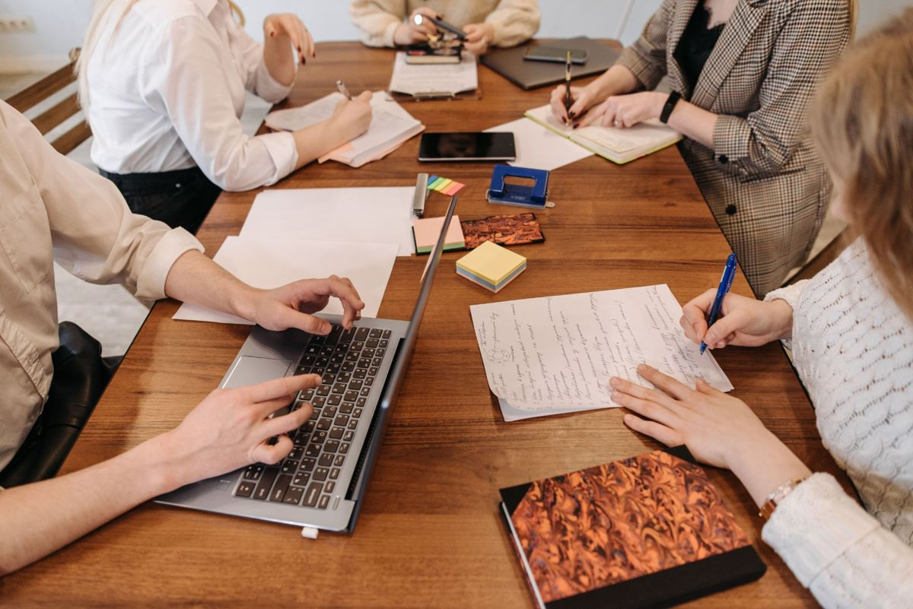
1Kleine Projekte, große WirkungMalé projekty, velký dopad
Wie gelingt die Förderung grenzüberschreitender Zusammenarbeit auch in Zukunft?Jak zajistit podporu přeshraniční spolupráce i v budoucnu?
Kleinprojekte bringen grenzüberschreitende Zusammenarbeit direkt zu den Menschen. Welche Erfahrungen machen Euroregionen und Projektträger mit der aktuellen Förderung, wo liegen die Herausforderungen? Der Workshop verbindet Erfahrungsaustausch und Zukunftswerkstatt: Gemeinsam benennen wir Handlungsbedarfe bei Zugang, Finanzierung, Verwaltungsaufwand, Beratung, Zielgruppen und Flexibilität und richten den Blick auf die nächste INTERREG-Förderperiode ab 2028.Malé projekty přinášejí přeshraniční spolupráci přímo k lidem. Jaké zkušenosti mají euroregiony a nositelé projektů se současnou podporou a kde leží výzvy? Workshop propojuje výměnu zkušeností s dílnou budoucnosti: společně pojmenujeme potřeby v oblasti přístupu, financování, administrativní zátěže, poradenství, cílových skupin a flexibility a podíváme se na příští programové období INTERREG od roku 2028.
Auf dem Weg zum gemeinsamen deutsch-tschechischen BildungsraumNa cestě ke společnému česko-německému vzdělávacímu prostoru
Nachbarsprachige Bildung von klein auf als BrückeVzdělávání v jazyce souseda od útlého věku jako most
Nachbarsprachige Bildung von der frühen Kindheit bis zum lebenslangen Lernen ist ein Schlüssel für die deutsch-tschechischen Beziehungen. Der Workshop knüpft an die Ergebnisse des Regionalforums 2024 in Liberec an und fragt: Wo stehen wir 2026? Und wie kommen wir weiter voran, mit welchen Schlüsselvorhaben und Rahmenbedingungen? Die Ergebnisse fließen als Empfehlungen an Verantwortungsträger ein.Vzdělávání v jazyce souseda od raného dětství až po celoživotní učení je klíčem k česko-německým vztahům. Workshop navazuje na výsledky Regionálního fóra 2024 v Liberci a ptá se: Kde stojíme v roce 2026? A jak se posunout dál, s jakými klíčovými záměry a rámcovými podmínkami? Výsledky budou předány jako doporučení odpovědným aktérům.
Enthusiasten und Macher unter sichMezi nadšenci a tvůrci
Was entsteht, wenn wir unsere Netzwerke miteinander verbinden?Co vznikne, když propojíme naše sítě?
In der deutsch-tschechischen Zusammenarbeit treffen unterschiedliche Netzwerke aufeinander, von Politik und Verwaltung über Euroregionen bis zur Zivilgesellschaft. Wie verbinden wir sie über Zuständigkeiten und Grenzen hinweg? Den Rahmen bilden die Erfahrungen aus „Ein Jahr an der Grenze“. Leitfrage: Wie können wir andere am besten dazu inspirieren, den ersten Schritt über die Grenze zu wagen?V česko-německé spolupráci se setkávají různé sítě, od politiky a veřejné správy přes euroregiony až po občanskou společnost. Jak je propojit napříč kompetencemi a hranicemi? Rámec tvoří zkušenosti z iniciativy „Rok na hranici“. Hlavní otázka: Jak můžeme ostatní co nejlépe inspirovat, aby se odvážili udělat první krok přes hranici?
Kapitel 06
Projekte aus dem deutsch-tschechischen Grenzraum stellen sich vor.Projekty z česko-německého příhraničí se představují.
Im Rahmen der Road Show präsentieren sich neun Projekte aus dem deutsch-tschechischen Kontext. Jedes Projekt hat einen eigenen Stand in der Piano Bar. Die Projekte wurden von der AGEG ausgewählt und organisiert. Zusätzlich sind die organisierenden Einrichtungen (IBZ St. Marienthal, AGEG/AEBR, DTZF) mit Tischen im Veranstaltungssaal präsent. Tippen Sie auf ein Projekt für die ausführliche Beschreibung.V rámci Road Show se představuje devět projektů z česko-německého prostředí. Každý projekt má vlastní stánek v piano baru. Projekty vybrala a zorganizovala AGEG. Pořádající instituce (IBZ St. Marienthal, AGEG/AEBR, ČNFB) jsou navíc zastoupeny stoly v jednacím sále. Klepnutím na projekt zobrazíte podrobný popis.
Kapitel 07
Das Regionalforum wird getragen von starken Partnern beider Länder.Regionální fórum podporují silní partneři obou zemí.
DurchführungRealizace
PartnerPartner
Mit Unterstützung vonS podporou
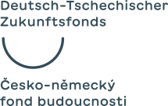
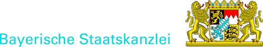
Workshop-Träger & MitwirkendeNositelé workshopů a spolupracující
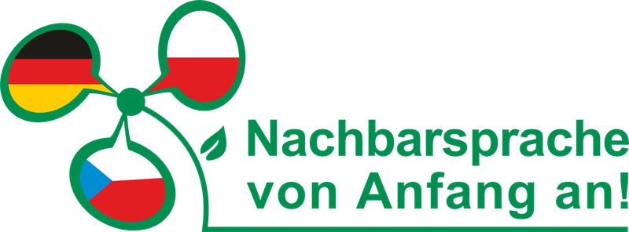
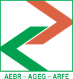
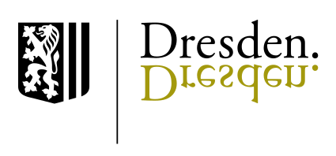
Deutsch-tschechische EuroregionenČesko-německé euroregiony
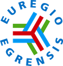
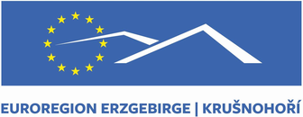
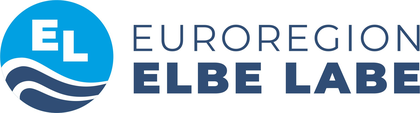
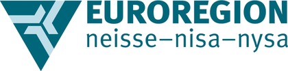
Tschechische MinisterienČeská ministerstva
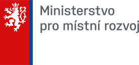
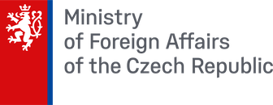
Weitere Logos folgen.Další loga budou doplněna.
Kapitel 08
Wir sammeln Poster von allen Partnern ein — für mehr Vernetzung und Kooperation im Grenzraum.Sbíráme plakáty od všech partnerů — pro lepší propojení a spolupráci v příhraničí.
KooperationsprofileProfily pro spolupráci
Partner stellen sich vor: Das kann ich anbieten, das suche ich. Tippen Sie auf ein Profil, um alle Angaben und Kontaktdaten zu sehen.Partneři se představují: co mohu nabídnout, co hledám. Klepnutím na profil zobrazíte všechny údaje a kontakt.
Weitere Profile folgen.Další profily budou doplněny.
Kapitel 09
Ihre Rückmeldung zählt. Am Ende von Tag 2 bitten wir Sie um eine kurze Evaluation des Forums — digital in wenigen Minuten.Vaše zpětná vazba se počítá. Na konci 2. dne vás poprosíme o krátkou evaluaci fóra — digitálně během několika minut.
Zur EvaluationK evaluaci